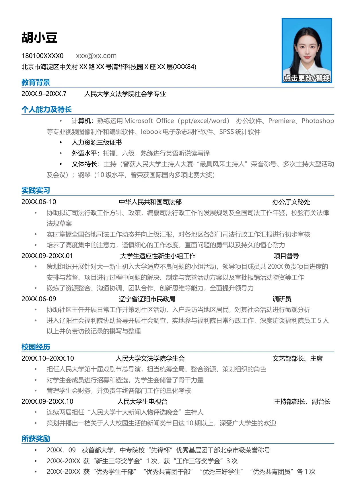

胡小豆
180100XXXX0
xxx@xx.com
北京市海淀区中关村XX 路XX 号清华科技园X 座XX 层(XXX84)
教育背景
20XX.9–20XX.7
人民大学文法学院社会学专业
个人能力及特长
计算机：
熟练运用Microsoft Office（ppt/excel/word） 办公软件、Premiere、Photoshop
等专业视频图像制作和编辑软件、Iebook 电子杂志制作软件、SPSS 统计软件
人力资源三级证书
外语水平：
托福、六级，熟练进行英语听说读写译
文体特长：
主持（曾获人民大学主持人大赛“最具风采主持人”荣誉称号、多次主持大型活动
及会议）；钢琴（10 级水平，曾荣获国际国内多项比赛大奖）
实践实习
20XX.06-10 中华人民共和国司法部 办公厅文秘处
协助拟订司法行政工作方针、政策，编纂司法行政工作的发展规划及全国司法工作年鉴，校验有关法律
法规草案
实时掌握全国各地司法工作动态并向上级汇报，对各地区各部门司法行政工作汇报进行初步审核
培养了高度集中的注意力，谨慎细心的工作态度，直面问题的勇气以及持久的恒心耐力
20XX.09-20XX.01 大学生适应性新生小组工作 项目督导
策划组织开展针对大一新生初入大学适应不良问题的小组活动，领导项目成员共20XX 负责项目进度的
安排与监督、项目进行过程中问题的解决、制定与完善活动方案以及审批报销活动物资等工作
锻炼了资源整合、沟通协调、团队合作、创新思维等能力，全面提升领导力
20XX.06-09 辽宁省辽阳市民政局 调研员
协助社区主任开展日常工作并策划社区活动，入户走访当地区居民，对其社会活动进行微观分析
进入辽阳社会福利院协助督导开展社会调查，实地参与福利院日常行政工作，深度访谈福利院员工5 人
以上并负责访谈记录的撰写与整理
校园经历
20XX.10–20XX.10
人民大学文法学院学生会
文艺部部长、主席
担任人民大学第十届戏剧节总导演，担当统筹全局、整合资源、策划组织的角色
对学生会成员进行招募和遴选，为学生会储备了骨干力量
管理学生会财务，并负责年终各部门工作的量化考核
20XX.09-20XX.10 人民大学生电视台 主持部部长、副台长
连续两届担任“人民大学十大新闻人物评选晚会”主持人
策划并播出一档关于人大校园生活的新闻类节目达10 期以上，深受广大学生的欢迎
所获奖励
20XX．09 获首都大学、中专院校“先锋杯”优秀基层团干部北京市级荣誉称号
20XX-20XX 获“新生三等奖学金”1 次，获“工作三等奖学金”3 次
20XX-20XX 获“优秀学生干部”“优秀共青团干部”“优秀三好学生”“优秀共青团员”各1 次